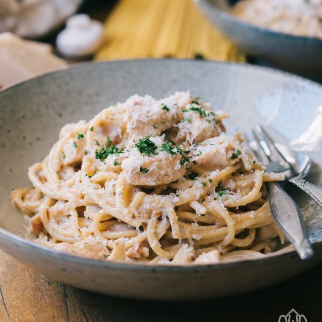

Carbonara

Carbonara is a classic Italian pasta dish made with spaghetti, eggs,
pancetta, and parmesan cheese. It's a simple and delicious meal that can
be made in under 30 minutes.
Ingredients
- 1 pound spaghetti
- 6 ounces pancetta, diced
- 4 large eggs, at room temperature
- 1 cup grated parmesan cheese, plus more for serving
- 2 cloves garlic, minced
- 1/4 teaspoon black pepper, freshly ground
- 1/4 cup flat-leaf parsley, chopped
Steps
- Cook the Pasta - Bring a large pot of salted water to a boil. Add spaghetti and cook until al dente. Reserve 1 cup of the pasta water and
drain the rest.
- Cook the Pancetta - In a large skillet over medium heat, cook pancetta until browned and crisp. Remove with a slotted spoon and set aside.
- Whisk the Eggs - In a bowl, whisk eggs, parmesan cheese, garlic, and black pepper until well combined.
- Combine and Toss - Add drained spaghetti to the skillet with the pancetta and toss to combine. Remove from heat and let cool for a minute or two.
Add the egg mixture to the skillet, stirring quickly to combine. If the pasta seems dry, add reserved pasta water a little at a time until it reaches the desired consistency.
- Serve - Top with chopped parsley and additional parmesan cheese. Serve hot.